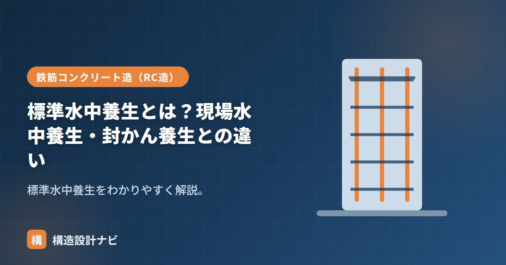

標準水中養生とは？現場水中養生・封かん養生との違い

標準水中養生とは、コンクリートの強度試験に使う供試体（テストピース）を、20±2℃に管理した水中で養生する、最も基本となる養生方法のことです。温度・水分の条件を一定にそろえることで、コンクリートという材料・配合が本来持っている強度のポテンシャルを、現場条件に左右されずに確認できます。供試体の養生方法には、目的の異なる方法がいくつかあり、それぞれ使い分けが必要です。
- 標準水中養生は供試体を20±2℃の水中で養生し、材齢28日の強度で配合の合否を判定する基本方法。
- 現場水中養生・封かん養生とは目的が異なり、それぞれ判定したい強度の種類が違う。
- 養生温度が20℃に管理されるのは、温度による強度発現のばらつきを取り除くため。
標準水中養生とは
供試体を20±2℃の水中で養生する方法です。温度・水分が一定の理想的な条件で、コンクリートの材料・配合が持つ本来の強度（ポテンシャル）を確認するために使われます。材齢28日の標準水中養生供試体の強度で、配合の合否を判定するのが基本です。生コン工場からの出荷判定や、構造体コンクリートの設計基準強度を確認する基準となる強度も、原則としてこの標準水中養生の結果を用います。
なぜ20℃で養生するのか
コンクリートの強度発現（セメントの水和反応が進む速さ）は、温度によって大きく変わります。気温が高いと早く強度が出て、低いとゆっくり発現します。もし現場の気温のまま養生した供試体で配合の合否を判定すると、真夏と真冬とで同じ配合でも試験結果が変わってしまい、材料や配合そのものの実力を正しく比較できません。そこで、季節や現場条件によらず一定の基準で比較できるように、温度をあらかじめ20±2℃という範囲に管理して養生します。
3つの養生方法の違い
| 養生方法 | 条件 | 主な用途 |
|---|---|---|
| 標準水中養生 | 20±2℃の水中（理想条件） | 材料・配合の強度判定（呼び強度の合否） |
| 現場水中養生 | 現場に置いた水中（現場の温度の影響を受ける） | 型枠・支保工の取り外し時期の判定 |
| 封かん養生 | 水分の出入りを封じる（構造体に近い） | 構造体コンクリート強度の推定 |
標準水中養生は「理想条件での実力」、現場水中養生は「現場の温度の影響を反映」、封かん養生は「実際の構造体に近い状態」を見ます。目的に応じて使い分けます。詳しい供試体のサイズや採取本数はコンクリートのテストピースで解説しています。
いつ・何本使うか
標準水中養生の供試体は、通常は材齢7日・28日といった時期に圧縮強度試験を行い、28日強度で配合の合否を最終的に判定します。一方、現場水中養生の供試体は、型枠や支保工を外してよい時期を判断するために、実際に外したいタイミングの前に試験します。目的が違うため、それぞれ別に供試体を採取・養生しておく必要があります。
「水中に浸けているから水中養生」とひとくくりに考えがちですが、標準水中養生と現場水中養生は温度管理の有無が決定的な違いです。現場に置いた水槽は季節や日照で水温が変動するため、標準水中養生と同じ結果にはなりません。判定したい強度の種類（配合の実力か、現場の実際の状態か）を取り違えないよう、どの養生方法の供試体かを明確に区別・管理することが重要です。
現場水中養生の水槽の水温を測らず「水に浸けてあるから標準養生と同じ」と思い込んでいる担当者に、これまで何度も出会ってきた。型枠を外す時期を判断するための試験なのに、季節を考えず標準水中養生の結果と比べてしまうと、判定を誤ることになりかねない。
「材齢」「コンクリートの養生」「養生期間」「コンクリートのテストピース」をどうぞ。
なぜ20℃なのか：温度と強度発現（図解）
もし現場の気温のまま養生すると、真夏に打ったコンクリートは高い値、真冬に打ったものは低い値が出ます。これでは配合が良いのか悪いのか判断できません。20±2℃という基準を定めることで、季節や地域に関係なく、材料と配合そのものの品質を評価できるようになります。
3つの養生方法の使い分け
| 養生方法 | 条件 | 判定する対象 | 使う場面 |
|---|---|---|---|
| 標準水中養生 | 20±2℃の水中 | コンクリートの配合・材料の品質 | 受入れ検査（呼び強度の判定） |
| 現場水中養生 | 現場の気温の水中 | 実際の構造体の強度 | 構造体強度の確認、型枠取外し時期の判定 |
| 現場封かん養生 | 密封して現場に放置 | 部材内部に近い強度 | 構造体強度の確認（断面の大きい部材） |
断面の大きい部材の内部は、水分が外に逃げない密封に近い状態にあります。現場水中養生では水を補給できてしまうため、実際の部材内部より条件が良くなります。封かん養生は、ラップやビニールで密封して水分の出入りを断つことで、部材内部の状態を再現します。柱や大梁など、断面が大きく水分が逃げにくい部材の強度確認に適しています。
よくある質問
Q1. 標準水中養生の温度が20℃から外れるとどうなりますか？
強度の測定値が変わってしまい、正しい判定ができません。20±2℃という許容範囲は、この影響を実用上無視できる範囲として定められたものです。養生水槽には温度計を設置し、記録を残すのが基本です。特に夏場の屋外に水槽を置くと水温が上がりやすいため、日陰の確保や温度管理装置の使用が必要になります。
Q2. 現場水中養生と現場封かん養生はどちらを使いますか？
部材の大きさと目的で選びます。断面が小さく水分が逃げやすい部材（スラブ・壁など）は現場水中養生、断面が大きく内部の水分が保たれる部材（柱・大梁・基礎など）は現場封かん養生が実態に近いとされます。JASS5では、構造体コンクリートの強度確認方法として、両者のいずれかを選択できるようになっています。
Q3. 供試体を水中から出すタイミングは？
試験の直前まで水中に置くのが原則です。試験前に取り出して乾燥させると、表面の含水状態が変わって強度に影響します。JISでは、試験まで水中またはそれに準じる湿潤状態に保つこととされています。取り出してから試験までの時間が空く場合は、湿布などで湿潤状態を維持します。
まとめ
- 標準水中養生は供試体を20±2℃の水中で養生する方法。配合の強度判定（材齢28日）に使う。
- 20℃に管理するのは、季節や現場条件によらず材料・配合の実力を一定基準で比較するため。
- 現場水中養生は現場温度を反映し、型枠・支保工の取り外し時期の判定に使う。
- 封かん養生は構造体に近い状態で、構造体強度の推定に使う。目的に応じて使い分ける。